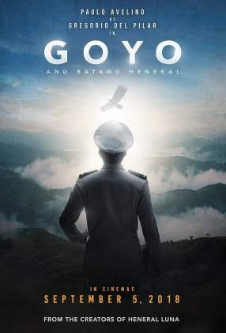

| Balkan Line | Aquaman | Never grow old | Message man | Destroyer |
| The Balkan Line In 1999, Serbia bombed and left the Kosovo region looted by bandits under the command of the Albanian warlord Smok. Human organs are removed within the bandits |
Waterman (Aquaman) Arthur Carrey realizes that he is the heir to Atlantis under the water , and he must appeal to his people to become their first hero, and then the world champion. |
An Irish shopkeeper gains a lot when lawbreakers seize the boundaries of a safe American city, but his family is threatened with death as death tolls rise in the city. |
Ryan Tiller, "who has a dark history, is far from his past by choosing to live a Bedouin life on board his boat. It is a friendship with Donnie, the little boy and his family, when the young boy approaches death because of a violent reprisal , forcing Ryan to return to his dark past again. |
A police officer named Irene Bell is on the lookout for tiredness and exhaustion because of her past chasing years of infiltrating into a disguised gang in a process that has had devastating consequences. |
|  | ||||
|---|---|---|---|---|
| Captain Marvel | URL | Slaughterhouse Rulez | Joyo | T-34 |
| Captain Marvel turns Carol Denver into one of the most powerful superheroes in the world of Marvel at the same time when the earth is drawn between two forces in a fierce war. |
Uri: The Military Strike The film is based on real facts that took place in 2016 when the Indian army launched a military operation aimed at retaliating against a suicide attack targeting some military targets. |
The Laws of the Slaughterhouse A British boarding school becomes a horrific bloody battlefield when a mysterious deep hole - near a drilling site - unleashes unspeakable horror. |
General Joyo. The story of Gregorio 'Joio' del Pilar, one of the youngest generals during the Philippine-American war that fought in the battle of the historic Tarad Pass. |
A brave group of Russian soldiers managed to escape from German families in the mythical half-destroyed T-34 tank. Those were the times of unforgettable courage, fierce fighting, unbreakable love, and mythic miracles. |
| Robin Hood | Alita: Battle Angel | Cold Pursuit | Overlord | Mortal Engines |
| Robben and his little leader, Little John, organized a bold revolution against the corrupt English crown in an exciting adventure full of fierce competition in the battlefield. |
(Alita) is an invention of an age of despair, found by Dr. Ido mysterious while collecting the parts of cyborg .. Alta becomes a killer and dangerous object, no longer remember who to be or where it came from. But for Dr. Ido, the truth is very clear; it is the organism that can break the cycle of death. But in order to complete its purpose, it must be who I am fighting and killing, this is where the two mechanisms are gaining their real importance; they are angels from heaven, and they are the angel of death. |
Flam the Box Offs, Niels (Liam Neeson) is a gifted and committed ice skater driver, awarded the Citizen of the Year award by the Colorado ski town. But the situation is changing and his life is turned upside down after his son was killed by the head of a criminal criminal organization, so Nils' only attempt is to take revenge on his son. |
Two US soldiers are behind enemy lines on the day of the landing in Normandy during the Second World War. Two American paratroopers are dropped behind enemy lines to carry out a mission critical to the success of the invasion, but as they approach their goal, they realize there is more to this. The village occupied by the Nazi forces and that this is not a simple military operation, especially when they find themselves fighting against supernatural powers as part of a Nazi experience. |
After years of the 60-minute war, surviving cities struggle to survive and remain on the barren desolate land by using the surviving cities as giant wheels to move and attack smaller cities in an effort to replenish their resources. |